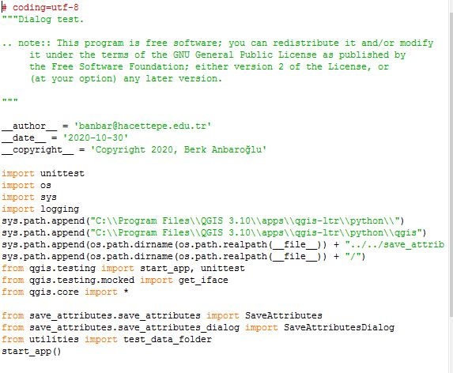
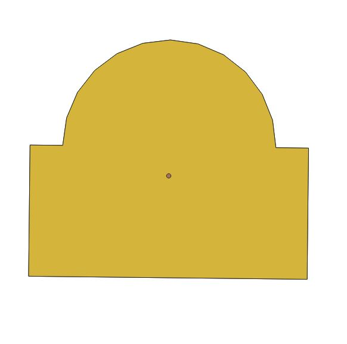
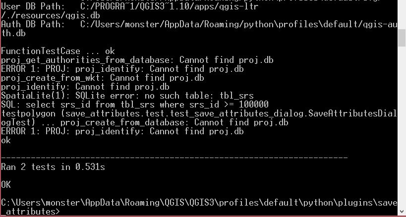
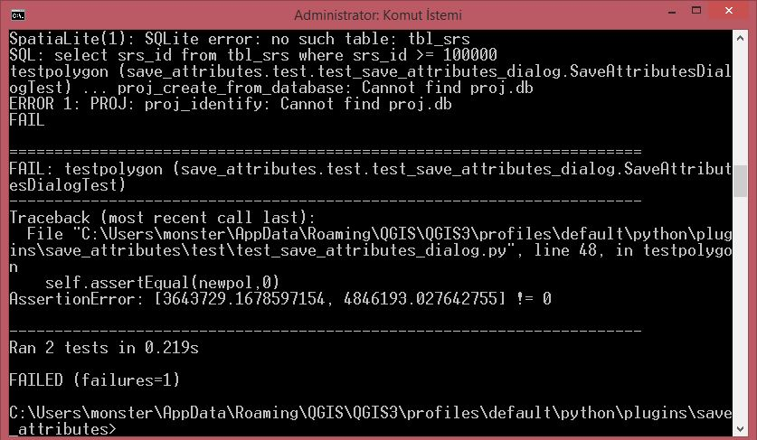

Unit Test of Save_attributes Plugin¶
-First we change some imports lines in “test_save_attributes_dialog.py” file
-Second we create “testfile.shp” file under the “data” directory to test our code
3-We add utilites.py to import our test shp file
4- We write the “testpolygon” function and when we run the test it controls if the function finds the centroids of the polygon correctly or not.
5-if we type wrong value like “0” it fails the test
